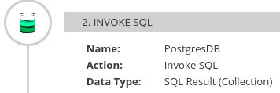
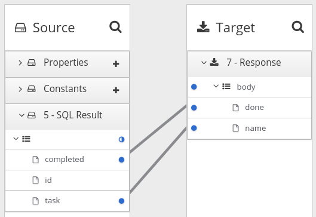

Creating integrations
After some planning and preparation, you are ready to create an integration. In the {prodname} web interface, when you click Create Integration, {prodname} guides you through the procedure to create an integration.
-
According to the kind of integration that you want to create:
-
An understanding of the general workflow for creating a simple integration
-
An understanding of the general workflow for creating an API provider integration
-
The following topics provide information and instructions for creating an integration:
Preparation for creating an integration
Preparation for creating an integration starts with answers to the questions listed in Considerations for planning your integrations. After you have a plan for the integration, you need to do the following before you can create the integration:
-
Determine whether an application that you want to connect to uses the OAuth protocol. For each application that uses OAuth, register {prodname} as a client that is authorized to access that application. Applications that use the OAuth protocol include:
-
Dropbox
-
Google applications (Gmail, Calendar, Sheets)
-
Salesforce
-
SAP Concur
-
Twitter
-
-
Determine whether an application that you want to connect to uses HTTP basic authentication. For each application that does, identify the user name and password for accessing that application. You need to provide this information when you create the connection.
-
For each application that you want to integrate, create a connection.
Alternatives for triggering integration execution
When you create an integration, the first step in the integration determines how execution of the integration is triggered. The first step in an integration can be one of the following:
-
Connection to an application or service. You configure the connection for the particular application or service. Examples:
-
A connection to Twitter can monitor tweets and trigger execution of a simple integration when a tweet contains text that you specified.
-
A connection to Salesforce can trigger execution of a simple integration when anyone creates a new lead.
-
A connection to AWS S3 can periodically poll a particular bucket and trigger execution of a simple integration when the bucket contains files.
-
-
Timer. {prodname} triggers execution of a simple integration at the interval that you specify. This can be a simple timer or a
cronjob. -
Webhook. A client can send an HTTP
GETorPOSTrequest to an HTTP endpoint that {prodname} exposes. The request triggers execution of the simple integration. -
API Provider. An API provider integration starts with a REST API service. This REST API service is defined by an OpenAPI 3 (or 2) document that you provide when you create an API provider integration. After you publish an API provider integration, {prodname} deploys the REST API service on OpenShift. Any client with network access to the integration endpoints can trigger execution of the integration.
General procedure for creating a simple integration
{prodname} guides you through the procedure for creating a simple integration. It prompts you to choose the start connection, the finish connection, optional middle connections, and other steps. When your integration is complete, you can publish it so that it is running or you can save it for publication at a later time.
To learn about the procedure for creating an API provider integration, see [create-api-provider-integration_api-provider].
-
You have a plan for what the steps in the integration will be.
-
You created a connection to each application or service that you want to connect to in this integration.
-
In the left panel in {prodname}, click Integrations.
-
Click Create Integration.
-
Choose and configure the start connection:
-
On the Choose a connection page, click the connection that you want to use to start the integration. When this integration is running, {prodname} will connect to this application and obtain data that you want the integration to operate on.
-
On the Choose an action page, select the action you want this connection to perform. The available actions vary for each connection.
-
On the page for configuring the action, enter values in the fields.
-
Optionally, if the connection requires data type specification, {prodname} prompts you to click Next to specify the input and/or output type of the action.
-
Click Next to add the start connection.
As an alternative to connecting to an application, a start connection can be a timer that triggers integration execution at intervals that you specify or it can be a webhook that accepts HTTP requests.
+ After you choose and configure the start connection, {prodname} prompts you to choose the finish connection.
-
-
Choose and configure the finish connection:
-
On the Choose a connection page, click the connection you want to use to complete the integration. When this integration is running, {prodname} will connect to this application with the data that the integration has been operating on.
-
On the Choose an action page, select the action you want this connection to perform. The available actions vary for each connection.
-
On the page for configuring the action, enter values in the fields.
-
Optionally, if the connection requires data type specification, {prodname} prompts you to click Next to specify the input and/or output type of the action.
-
Click Next to add the finish connection.
As an alternative to connecting to an application, a finish connection can send information to the integration’s log about the messages that the integration processed. To do this, select Log when {prodname} prompts you to choose the finish connection.
-
-
Optionally, add one or more connections between the start connection and the finish connection. For each connection, choose its action and enter any required configuration details.
-
Optionally, add one or more steps that operate on integration data between connections. See About adding steps between connections.
-
In the integration visualization, look for any
 icons. These
warnings indicate that a data mapper step is needed before
this connection. Add the required data mapper steps.
icons. These
warnings indicate that a data mapper step is needed before
this connection. Add the required data mapper steps. -
When the integration contains all needed steps, click Save or Publish according to whether you want to start running the integration.
-
In the Name field, enter a name that distinguishes this integration from any other integrations.
-
Optionally, in the Description field, enter a description, for example, you can indicate what this integration does.
-
Optionally, from the list of library extensions that you have imported, you can select one or more library extensions to associate with the integration. Note that you must have already imported a library
.jarfile as a {prodname} extension if you want it to appear in this list so that you can select it.For more information about library extensions, see How to develop library extensions.
-
If you are ready to start running the integration, click Save and publish.
{prodname} displays the integration summary. You can see that {prodname} is in the process of publishing it. It may take a few moments for the status of the integration to become Running.
If you do not want to publish the integration, click Save. {prodname} saves the integration and displays its flow visualization. You can continue editing it. Or, in the breadcrumbs at the top of the page, click Integrations to display the list of integrations. If you saved but did not publish the integration, then Stopped appears on the integration’s entry.
Adding a timer connection to trigger integration execution
To trigger execution of an integration according to a schedule that you specify, add a timer connection as a simple integration’s start connection. A timer connection cannot be in the middle of a flow nor at the end of a flow.
-
In {prodname}, on the left, click Integrations.
-
Click Create Integration.
-
On the Choose a connection page, click Timer.
{prodname} provides a Timer connection; you do not need to create a timer connection.
-
On the Choose an action page, select Cron or Simple.
-
A
crontimer requires acronexpression that specifies the schedule for triggering integration execution. -
A simple timer prompts you to specify a period and its time unit, for example,
5 seconds,1 hour. Available units are milliseconds, seconds, minutes, hours, days.
-
-
According the type of timer that you are adding, enter a
cronexpression or a period with a selected time unit. -
Click Next to add the Timer connection as the integration’s start connection.
Integration behavior when the data is in a collection
Sometimes, a connection returns a collection, which contains multiple values that are all the same type. When a connection returns a collection, the flow can operate on the collection in a number of ways, including:
-
Execute each step once for the collection.
-
Execute each step once for each element in the collection.
-
Execute some steps once for the collection and execute other steps once for each element in the collection.
To decide how to operate on a collection in a flow, you need to know which applications the flow connects to, whether they can handle collections, and what you want the flow to accomplish. You can then use the information in the following topics to add steps to a flow that processes a collection:
About processing collections
The easiest way for a flow to process a collection is to use the data mapper to map fields that are in a source collection to fields that are in a target collection. For many flows, this is all that is required. For example, a flow might obtain a collection of employee records from a database and then insert those records into a spreadsheet. Between the database connection and the Google Sheets connection, a data mapper step maps the database fields to the Google Sheets fields. Since both the source and the target are collections, when {prodname} executes the flow, it calls the Google Sheets connection once. In that call, {prodname} iterates through the records and correctly populates the spreadsheet.
In some flows, you might need to split a collection into individual objects. For example, consider a flow that connects to a database and obtains a collection of employees who will lose allotted time off if they do not use it before a certain date. The flow then needs to send an email notification to each of these employees. In this flow, you would add a split step after the database connection. You would then add a data mapper step that maps the source fields for an employee record to target fields in a Gmail connection that sends a message. When {prodname} executes the flow, it executes the data mapper step and the Gmail connection once for each employee.
Sometimes, after you split a collection in a flow, and after the flow executes some steps once for each element that was in the collection, you want the flow to operate on the collection again. Consider the example in the previous paragraph. Suppose that after a Gmail connection sends a message to each employee, you want to add a list of the employees who were notified to a spreadsheet. In this scenario, after the Gmail connection, add an aggregate step to create a collection of employee names. Then add a data mapper step that maps fields in the source collection to fields in the target Google Sheets connection. When {prodname} executes the flow, it executes the new data mapper step and the Google Sheets connection once for the collection.
These are the most common scenarios for processing a collection in a flow. However, much more complex processing is also possible. For example, when the elements in a collection are themselves collections, you can nest split and aggregate steps inside other split and aggregate steps.
Using the data mapper to process collections
In a flow, when a step outputs a collection and when a subsequent connection that is in the flow expects a collection as the input, you can use the data mapper to specify how you want the flow to process the collection.
When a step outputs a collection, the flow visualization displays Collection in the details about the step. For example:

Add a data mapper step after the step that provides the collection and before the step that needs the mappings. Exactly where in the flow this data mapper step needs to be depends on the other steps in the flow. The following image shows mappings from source collection fields to target collection fields:

In the source and target panels, the data mapper displays to indicate a collection. When a source collection or a target collection contain only primitive types, the data mapper does not display collection fields because there is no need to. You can map from/to the collection itself.
When a collection contains more than one kind of primitive type or when it contains at least one complex type then the data mapper displays the collection’s child fields. You can map from/to each field.
When a source field is nested in a number of collections you can map it to a target field that meets one of these conditions:
-
The target field is nested in the same number of collections as the source field. For example, these mappings are allowed:
-
/A<>/B<>/C → /D<>/E<>/F
-
/A<>/B<>/C → /G<>/H/I<>/J
-
-
The target field is nested in only one collection. For example, this mapping is allowed:
/A<>/B<>/C → /K<>/L
In this case, the data mapper uses a depth-first algorithm to iterate over all values in the source. In order of occurrence, the data mapper puts the source values into a single target collection.
The following mapping is not allowed:
/A<>/B<>/C cannot-map-to /M<>/N/O<>/P<>/Q
When {prodname} executes the flow, it iterates over the source collection elements to populate the target collection elements. If you map one or more source collection fields to a target collection or to target collection fields, the target collection elements contain values for only the mapped fields.
If you map a source collection or a field in a source collection to a target field that is not in a collection, then when {prodname} executes the flow, it assigns the value from only the last element in the source collection. Any other elements in the collection are ignored in that mapping step. However, any subsequent mapping steps can access all elements in the source collection.
When a connection returns a collection that is defined in a JSON or Java document, the data mapper can usually process the source document as a collection.
Adding a split step
During execution of a flow, when a connection returns a collection of objects, {prodname} executes subsequent steps once for the collection. If you want to execute subsequent steps once for each object that is in the collection, add a split step. For example, a Google Sheets connection returns a collection of row objects. To execute subsequent steps once for each row, add a split step after the Google Sheets connection.
Ensure that the input to a split step is always a collection. If a split step gets a source document that is not a collection type, the step splits the input at each space. For example, {prodname} splits “Hello world!” input into two elements: “Hello” and “world!”, and passes those two elements to the next step in the flow. In particular, XML data is not a collection type.
-
You are creating or editing a flow.
-
The flow already has all the connections that it requires.
-
In the flow visualization, the connection that obtains the source data indicates that the data is a (Collection).
-
In the flow visualization, click the
 at the location where you want to add the split step.
at the location where you want to add the split step. -
Click Split. This step does not require any configuration.
-
Click Next.
Typically, you want to add any split steps and aggregate steps before you add data mapper steps. This is because whether the data is a collection or individual objects affects the mappings. If you add a data mapper step and then add a split step, you usually need to redo the mappings. Likewise, if you remove a split or aggregate step, then you would need to redo any mappings.
Adding an aggregate step
In a flow, add an aggregate step where you want {prodname} to create a collection from individual objects. During execution, after an aggregate step, instead of executing subsequent steps once for each object, {prodname} executes subsequent steps once for the collection.
When deciding whether to add an aggregate step to a flow, consider the connections in the flow. After a split step, for each subsequent connection, {prodname} connects to that application once for each element in the flow’s data. For some connections, it might be preferable to connect once rather than multiple times.
-
You are creating or editing a flow.
-
The flow already has all the connections that it requires.
-
A previous step split a collection into individual objects.
-
In the flow visualization, where you want to add an aggregate step to the flow, click the
. -
Click Aggregate. This step does not require any configuration.
-
Click Next.
Typically, you want to add any split and aggregate steps before you add data mapper steps. This is because whether the data is a collection or individual objects affects the mappings. If you add a data mapper step and then add an aggregate step, you usually need to redo the mappings. Likewise, if you remove an aggregate step, then you would need to redo any mappings.
Example of processing a collection in a flow
This simple integration obtains a collection of tasks from the sample database provided with {prodname}. The flow splits the collection into individual task objects and then filters these objects to find the tasks that have been done. The flow then aggregates the completed tasks in a collection, maps the fields in that collection to fields in a spreadsheet, and finishes by adding a list of completed tasks to a spreadsheet.
The procedure below provides instructions for creating this simple integration.
-
You created a Google Sheets connection.
-
In the account that the Google Sheets connection accesses, there is a spreadsheet for receiving the database records.
-
Click Create Integration.
-
Add the start connection:
-
On the Choose a connection page, click PostgresDB.
-
On the Choose an action page, select Periodic SQL Invocation.
-
In the SQL Statement field, enter
select * from todoand click Next.
This connection returns a collection of task objects.
-
-
Add the finish connection:
-
On the Choose a connection page, click your Google Sheets connection.
-
On the Choose an action page, select Append values to a sheet.
-
In the SpreadsheetId field, enter the ID of the spreadsheet to add the list of tasks to.
-
In the Range field, enter
A:Bas the target columns that you want to append values to. The first column, A, is for the task IDs. The second column, B, is for the task names. -
Accept the defaults for Major Dimension and for Value Input Option, and click Next.
The Google Sheets connection finishes the flow by adding each element in a collection to a spreadsheet.
-
-
Add a split step to the flow:
-
In the flow visualization, click the plus sign.
-
Click Split.
After the flow executes the split step, the result is a set of individual task objects. {prodname} executes the subsequent steps in the flow once for each individual task object.
-
-
Add a filter step to the flow:
-
In the flow visualization, after the split step, click the plus sign.
-
Click Basic Filter and configure the filter as follows:
-
Click in the first field and select
completed, which is the name of the field that contains the data that you want to evaluate. -
In the second field, select equals as the condition that the completed field value must satisfy.
-
In the third field, specify
1as the value that must be in the completed field.1indicates that the task has been completed.
-
-
Click Next.
During execution, the flow executes the filter step once for each task object. The result is a set of individual, completed task objects.
-
-
Add an aggregate step to the flow:
-
In the flow visualization, after the filter step, click the plus sign.
-
Click Aggregate.
Now the result set contains one collection, which contains an element for each completed task.
-
-
Add a data mapper step to the flow:
-
In the flow visualization, after the aggregate step, click the plus sign.
-
Click Data Mapper and map the following fields from the SQL result source collection to the Google Sheets target collection:
-
id to A
-
task to B
-
-
Click Done.
-
-
Click Publish.
When the integration is running, it obtains tasks from the sample database every minute and then adds the completed tasks to the first sheet in the spreadsheet. The integration maps the task ID to the first column, A, and it maps the task name to the second column, B.
About adding steps between connections
Although it is not a requirement, the recommendation is to add all needed connections to a primary flow and then, according to the processing that you want the flow to execute, add additional steps between connections. In a flow, each step operates on data obtained from the previous connection(s) and any previous steps. The resulting data is available to the next step in the flow.
Often, you must map data fields that are received from a
connection to data fields that the next connection in the flow
can operate on. After you add all connections to a flow,
check the flow visualization.
For each connection that requires data mapping before
it can operate on the input data,
{prodname} displays
 . Click this
icon to see Data Type Mismatch: Add a data
mapper step before this connection to resolve the difference.
. Click this
icon to see Data Type Mismatch: Add a data
mapper step before this connection to resolve the difference.
You can click the link in the message to display the Configure Mapper page in which you add and specify a data mapper step. However, the recommendation is to add other needed steps, and then add data mapper steps last.
Evaluating integration data to determine the execution flow
In a flow, a Conditional Flows step evaluates integration data against conditions that you specify. For each specified condition, you add connections and other steps to the flow associated with that condition. During execution, a Conditional Flows step evaluates incoming data to determine which flow to execute.
The following topics provide details:
Behavior of a Conditional Flows step
During integration development, you can add a Conditional Flows step to a flow and define one or more conditions. For each condition, you add steps to a conditional flow that is associated with only that condition. During integration execution, for each message that the previous integration step passes to a Conditional Flows step, the Conditional Flows step evaluates the message content against the specified conditions in the order in which you define them in the {prodname} page for specifying conditions.
In a Conditional Flows step, the behavior is one of the following:
-
For the first condition that evaluates to true, the integration executes the conditional flow that is associated with that condition.
-
If no conditions evaluate to true, and there is a default conditional flow, the integration executes that flow.
-
If no conditions evaluate to true and there is no default conditional flow, the integration does not execute a conditional flow.
After executing a conditional flow, or after no conditions evaluate to true and there is no default conditional flow, the integration executes the next step in the primary flow.
Example of a Conditional Flows step
Suppose that an integration connects to a SQL database to obtain information about how much paid-time-off (PTO) each employee has. The returned data indicates:
-
Some employees might lose PTO if they do not use it by a certain date.
-
Other employees already used more PTO than they earned.
-
The rest of the employees have PTO that they can use without time restrictions.
In a Conditional Flows step, this example integration can define two conditions, an execution flow for each condition, and a default execution flow:
-
When PTO is greater than some number, it indicates that some PTO might be lost if not used by a certain date. When this condition evaluates to true, the integration executes a flow that sends email to affected employees. The email contains the amount of PTO that must be used and the date by which it must be used.
-
When PTO is a negative number, it indicates that some PTO has been used but not earned. When this condition evaluates to true, the integration executes a flow that sends an email to affected employees. The email contains the amount of PTO that the employee has overdrawn and specifies the date on which the employee begins to accrue PTO again.
-
When neither of the two conditions evaluates to true, the integration executes the default flow. This example integration executes the default conditional flow for employees whose PTO is neither a negative number nor above some specified number. The default flow sends an email to those employees with a statement of the amount of PTO that the employee has.
General procedure for configuring a Conditional Flows step
After you add a Conditional Flows step to a flow, the workflow for configuring the step is as shown in the following image:

-
The basic expression builder prompts you for the property that contains the content that you want to evaluate, and the condition and value that you want to test for. The basic expression builder is suitable for most Conditional Flows steps.
-
The advanced expression builder lets you specify a conditional expression in Camel Simple Language.
-
You must use the same expression builder for all conditions. In other words, to configure a Conditional Flows step, you must use the basic expression builder or the advanced expression builder. You cannot use both.
-
In a conditional flow, you cannot add a Conditional Flows step.
Using the basic expression builder to specify conditions
In a flow, add a Conditional Flows step when you want to evaluate incoming data to determine the integration’s execution path. The procedure described here shows how to use the basic expression builder to specify conditions.
-
You are creating or editing a primary flow. If this is a simple integration, the start and finish connections have been added.
-
Input to a Conditional Flows step must be an individual message. In the integration visualization, if the previous step’s Data Type shows (Collection), add a Split step after the previous step and before this Conditional Flows step.
-
You are familiar with the fields that will be in the messages that the integration passes to the Conditional Flows step you are about to add.
-
In the integration visualization, where you want to add a Conditional Flows step, click
. -
Click Conditional Flows.
-
Click Select in the Basic expression builder entry.
-
In the Configure Conditional Flows page, define one or more conditions:
-
Click in the initial When field.
-
In the list of properties, click the property that contains the content that you want the Conditional Flows step to evaluate.
-
In the next field, accept Contains as the condition for which the step evaluates the data or select another condition. The condition that you select in this field must evaluate to true for the value that you enter in the next field.
-
In the third field, specify the value that the condition tests for.
-
Optional. Click Add another condition to specify another condition.
-
Repeat this set of steps for each additional condition that you want to define.
-
Optional. Change the order in which the integration evaluates the defined conditions by clicking the up or down arrow to the right of a condition.
-
Optional. Click Execute default flow if you want there to be a default conditional flow.
If you select Execute default flow, during execution, if none of the conditions that you specified evaluates to true, the integration executes the default conditional flow. If you do not select Execute default flow, during execution, if none of the conditions that you specified evaluates to true, the integration continues execution with the step that follows this Conditional Flows step.
-
-
Click Next.
-
Optional. Specify the output data type if {prodname} prompts for it. All conditional flows that are part of this Conditional Flows step must have the same output type.
-
Click Next.
{prodname} displays the flow visualization. Below the Conditional Flows step that you are adding, there is an entry for each condition that you specified, as well as an entry for an Otherwise default flow if you indicated that the Conditional Flows step has a default flow.
For each condition, add steps to its associated flow. If there is a default flow, add steps to the default flow.
-
For details about the conditions that you can select in the middle field for each condition, see Camel Simple Language operators. Note that the matches condition corresponds to the Simple Language regex operator.
-
If you cannot define the conditions that you need by using the basic expression builder, see Using the advanced expression builder to specify conditions.
Using the advanced expression builder to specify conditions
In a flow, add a Conditional Flows step when you want to evaluate incoming data to determine the integration’s execution path. The procedure described here shows how to use the advanced expression builder to specify conditional expressions in Camel Simple Language.
-
You are creating or editing a primary flow. If this is a simple integration, the start and finish connections have been added.
-
Input to a Conditional Flows step must be an individual message. In the integration visualization, if the previous step’s Data Type shows (Collection), add a Split step.
-
You are familiar with the fields that will be in the messages that the integration passes to the Conditional Flows step you are about to add.
-
You are familiar with the Camel Simple Expression language or you have expressions for the conditions that you want to evaluate.
-
In the integration visualization, where you want to add a Conditional Flows step, click
. -
Click Conditional Flows.
-
Click Select in the Advanced expression builder entry.
-
In the Configure Conditional Flows page, define one or more conditions:
-
In the initial When field, enter a Camel Simple Language conditional expression. For example, the following expression evaluates to true when the body of the message contains a
ptofield that is greater than160:${body.pto} > 160When this expression evaluates to true, the integration executes the conditional flow that you create and associate with this condition.
In an expression, an additional property specification is required when the Conditional Flows step is in one of the following kinds of flows:
-
An API provider integration operation flow
-
A simple integration that starts with a webhook connection
-
A simple integration that starts with a custom REST API connection
In these flows, {prodname} wraps the actual message content inside a
bodyproperty. This means that the input to a Conditional Flows step contains abodyproperty that contains anotherbodyproperty that contains the actual message content. Consequently, in an expression that is in a Conditional Flows step that is in one of these kinds of flows, you must specify two instances ofbody. For example, suppose you want to evaluate content that is in theptofield of the input message. Specify the expression like this:${body.body.pto} > 160 -
-
Optional. Click Add another condition, and repeat the previous step. Do this for each additional condition that you want to define.
-
Optional. Change the order in which the Conditional Flows step evaluates the defined conditions by clicking the up or down arrow to the right of a condition field.
-
Optional. Click Execute default flow if you want there to be a default conditional flow.
If you select Execute default flow, during execution, if none of the conditions that you specified evaluates to true, the integration executes the default conditional flow. If you do not select Execute default flow, during execution, if none of the conditions that you specified evaluates to true, the integration continues execution with the step that follows this Conditional Flows step.
-
-
Click Next.
-
Optional. Specify the output data type if {prodname} prompts for it. All conditional flows that are part of this Conditional Flows step must have the same output type.
-
Click Next.
{prodname} displays the flow visualization. Below the Conditional Flows step that you are adding, there is an entry for each condition that you specified, as well as an entry for an Otherwise default flow if you indicated that the Conditional Flows step has a default flow.
For each condition, add steps to its associated flow. If there is a default flow, add steps to the default flow.
Adding steps to conditional flows
In a Conditional Flows step, after you define conditions, for each condition, add steps to the flow that is associated with that condition. During execution, when the Conditional Flows step evaluates a condition as true, it executes the flow that is associated with that condition.
-
You defined the conditions for this Conditional Flows step.
-
You are familiar with the fields that will be in the messages that the integration passes to this Conditional Flows step.
-
You created each connection that you want to add to a conditional flow.
-
In the integration visualization, for the condition whose flow you want to add to, click Open Flow.
{prodname} displays that condition near the top of the page. The conditional flow visualization shows the Flow Start and Flow End steps that all conditional flows have.
-
In the flow visualization, click
where you want to add a step to this conditional flow. -
Click the step that you want to add. You can add any connection or step that you can add to a primary flow.
The output from the Flow Start step is always the same as the output from the primary flow step that is before this Conditional Flows step. For example, if you add a filter step or a data mapper step to this conditional flow, the available fields are the same fields that would be available in the primary flow.
-
Configure the step as needed.
-
Repeat the previous three instructions for each step that you want to add to this conditional flow.
-
At the top of the page, in the Flow field, click the down carat and click Back to primary flow, which saves this conditional flow and displays the primary flow.
-
For each conditional flow that you want to add to, repeat this procedure.
The primary flow has a conditional flow for each condition that you defined in the Conditional Flows step. If you selected the Execute default flow option, the primary flow also has a default conditional flow.
During execution, the Conditional Flows step executes the conditional flow that is associated with the first condition that evaluates to true. The integration then executes the step that follows the Conditional Flows step.
If no condition evaluates to true then the Conditional Flows step executes the default conditional flow. The integration then executes the step that follows the Conditional Flows step.
If both of the following are true:
-
No condition evaluates to true.
-
There is no default conditional flow.
Then the integration executes the step that follows the Conditional Flows step.
Adding a data mapper step
Almost all integrations require data mapping. A data mapper step
maps data fields from the previous
connection(s) and any other steps to data fields that the
next connection in the flow
can operate on. For example,
suppose the integration data contains a Name field and the next
connection in the flow has a CustomerName field. You need to
map the source Name field to the target CustomerName field.
| The data mapper displays the largest possible set of source fields that can be provided by the previous integration step. However, not all connections provide data in each displayed source field. For example, a change to a third-party application might discontinue providing data in a particular field. As you create an integration, if you notice that data mapping is not behaving as you expect, ensure that a source field that you want to map contains the data that you expect. |
You are creating or editing a flow.
-
In the flow visualization, where you want to add a data mapper step, click the
. -
Click Data Mapper to display source and target fields in the data mapper canvas.
See Mapping integration data to fields for the next connection.
Adding a basic filter step
You can add a step to a flow to filter the data that the flow operates on. In a filter step, {prodname} inspects the data and continues only if the content meets criteria that you define. For example, in a flow that obtains data from Twitter, you can specify that you want to continue execution by operating only on tweets that contain "Red Hat".
-
The flow contains all connections that it needs to.
-
You are creating or editing a flow.
-
In the flow visualization, where you want to add a filter step, click the
. -
Click Basic Filter.
-
On the Configure Basic Filter Step page, in the Continue only if incoming data match field:
-
Accept the default that all defined rules must be satisfied.
-
Or, select ANY of the following to indicate that only one rule must be satisfied.
-
-
Define the filter rule:
-
In the Property Name field, enter or select the name of the field that contains the content you want the filter to evaluate. For example, suppose the data coming in to the step consists of tweets that mention your Twitter handle. You want to continue execution only when the tweet contains certain content. The tweet is in a field named
textso you enter or selecttextas the value in the property name field.You can define the property name in the following ways:
-
Start typing. The field has a typeahead feature that provides a list of possible completions for you in a pop-up box. Select the correct one from the box.
-
Click in the field. A dropdown box appears with a list of available properties. Select the property of interest from the list.
-
-
In the Operator field, select an operator from the dropdown box. The setting defaults to Contains. For execution to continue, the condition that you select in this field must evaluate to true for the value that you enter in the Keywords field.
-
In the Keywords field, enter a value to filter on. For example, suppose that you accept the default Contains operator and you want to continue integration execution only when the incoming text mentions a certain product. You would enter the product name here.
-
-
Optionally, click + Add another rule and define another rule.
You can delete a rule by clicking the trash can icon in the top right of the rule entry.
-
When the filter step is complete, click Done to add it to the flow.
-
For details about the operators and for examples of specifying text to evaluate, see Camel Simple Language operators. Note that the basic filter step matches operator corresponds to the Simple Language regex operator.
-
If you cannot define the filter you need in a basic filter step, see Adding an advanced filter step.
Adding an advanced filter step
In a filter step, {prodname} inspects the data and continues executing the flow only if the content meets criteria that you define. If the basic filter step does not let you define the exact filter that you need, then add an advanced filter step.
-
The flow contains all connections that it needs to.
-
You are creating or editing a flow.
-
You are familiar with the Camel Simple Language, or you have been provided with a filter expression.
-
In the flow visualization, where you want to add an advanced filter step to the flow, click the
. -
Click Advanced Filter.
-
In the edit box, use the Camel Simple Language to specify a filter expression. For example, the following expression evaluates to true when the message header’s
typefield is set towidget:${in.header.type} == 'widget'In the following example, the expression evaluates to true when the body of the message contains a
titlefield:${in.body.title} -
Click Next to add the advanced filter step to the flow.
In an expression, an additional property specification is required when the advanced filter step is in one of the following kinds of flows:
-
An API provider integration operation flow
-
A simple integration that starts with a webhook connection
-
A simple integration that starts with a custom REST API connection
In these flows, {prodname} wraps the actual message content inside a body
property. This means that the input to the advanced filter contains a
body property that contains another body property that contains
the actual message content. Consequently, in an advanced filter expression
that is in one of these kinds of flows,
you must specify two instances of body. For example, suppose you want
to evaluate content that is in the completed field of the input message.
Specify the expression like this:
${body.body.completed} = 1
Adding a template step
In a flow, a template step takes data from a source and inserts it into the format that is defined in a template that you upload to {prodname}. The benefit of a template step is that it provides data output in a consistent format that you specify.
In the template, you define placeholders and specify static text. When you create the flow, you add a template step, map source fields to the template placeholders, and then map template content to the next step in the flow. When {prodname} executes the flow, it inserts the values that are in the mapped source fields into an instance of the template and makes the result available to the next step in the flow.
If a flow includes a template step then it is most likely the only template step in that flow. However, more than one template step in a flow is allowed.
{prodname} supports the following kinds of templates: Freemarker, Mustache, Velocity.
-
You must be creating or editing a flow.
-
If you are creating a simple integration then it must already have its start and finish connections.
-
In the flow visualization, click the
where you want to add a template step. -
Click Template. The Upload Template page opens.
-
Specify the template type, which is Freemarker, Mustache, or Velocity.
-
To define the template, do one of the following:
-
Drag and drop a template file or a file that contains text that you want to modify to create a template, into the template editor.
-
Click browse to upload, navigate to a file, and upload it.
-
In the template editor, start typing to define a template.
-
-
In the template editor, ensure that the template is valid for use with {prodname}. Examples of valid templates are after this procedure. {prodname} displays to the left of a line that contains a syntax error. Hovering over a syntax error indicator displays hints about how to resolve the error.
-
Click Done to add the template step to the flow.
If the Done button is not enabled then there is at least one syntax error that you must correct.
Input to a template step must be in the form of a JSON object. Consequently, you must add a data mapping step before a template step.
-
To add a data mapper step before the template step:
-
In the flow visualization, click the
that is
immediately before the template step that you just added. -
Click Data Mapper.
-
In the data mapper, map a source field to each template placeholder field.
For example, using the example templates that are after this procedure, map a source field to each of these template fields:
-
time -
name -
text
-
-
In the upper right, click Done to add the data mapper step to the flow.
Output from a template step is always a JSON object. Consequently, you must add a data mapper step after a template step.
-
-
To add a data mapper step after the template step:
-
In the flow visualization, click the
that is
immediately after the template step that you just added. -
Click Data Mapper.
-
In the data mapper, map the template’s message field, which always contains the result of inserting source fields into the template, to a target field. For example, suppose that a Gmail connection is next in the flow and you want to send the result of the template step as the content of a Gmail message. To do this, you would map the message source field to the text target field.
-
In the upper right, click Done.
-
Example of a Mustache template:
At {{time}}, {{name}} tweeted:
{{text}}
Freemarker and Velocity support this example template:
At ${time}, ${name} tweeted:
${text}
Velocity also supports syntax without braces, as shown in this example:
At $time, $name tweeted: $text
A placeholder cannot contain a . (period).
For details about mapping fields, see Mapping integration data to fields for the next connection.
Adding a custom step
If {prodname} does not provide a step that you need in a flow, a developer can define one or more custom steps in an extension. A custom step operates on data between connections in a flow.
You add a custom step to a flow in the same way that you add a built-in step. For a simple integration, choose the start and finish connections, add other connections as needed and then add additional steps. For an API provider integration, select the operation whose flow executes the custom step, add connections as needed to the flow, and then add other steps. When you add a step, {prodname} operates on the data it receives from the previous step(s) in the flow.
-
You uploaded the custom step extension to {prodname}. See Making custom features available.
-
You are creating or editing a flow.
-
The flow already has all the connections that it requires.
-
In the flow visualization, where you want to add a custom step, click the
. -
Click the custom step that you want to add.
The available steps includes any custom steps that are defined in extensions that were uploaded to your {prodname} environment.
-
Respond to prompts for any information that is required to perform the step. This information varies for each custom step.